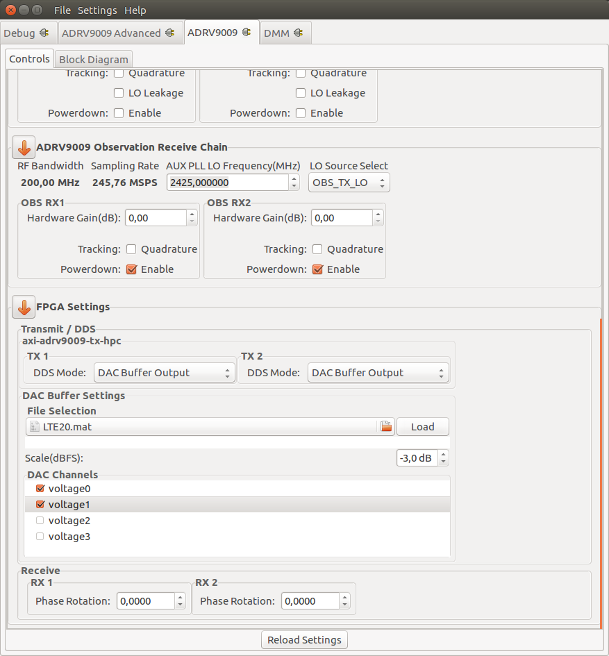

Basic IQ Datafiles
DDS Mode - DAC Buffer Output allows loading of Matlab MAT, Binary and ASCII TEXT sample files.
{kind=link}
Example files
Filename |
File type |
suggested sample rate |
what it is |
|---|---|---|---|
10.txt |
text file |
any |
basic IQ imbalance test waveform. The frequency that you will see will be determined by the sample rate. |
11.txt |
text file |
any |
basic IQ imbalance test waveform The frequency that you will see will be determined by the sample rate. |
1M_10M_nyq.txt |
text file |
any |
10 point sine wave, generating 12.88MHz tone @ 122.88MSPS |
LTE5.mat |
MATLAB file |
7.68MSPS |
Created via lte_example |
LTE10.mat |
MATLAB file |
15.36MSPS |
Created via lte_example |
LTE15.mat |
MATLAB file |
23.04MSPS |
Created via lte_example |
LTE20.mat |
MATLAB file |
30.72MSPS |
Created via lte_example |
sinewave_0.3.mat |
MATLAB file |
any |
A sine wave with the amplitude of 0.3 for one I & Q channel. This should be scaled to 30% of full scale. The I/Q channel will be duplicated on channel 1 and 2. |
sinewave_0.3_2ch.mat |
MATLAB file |
any |
A sine wave with the amplitude of 0.3 for two I & Q channels. This should be scaled to 30% of full scale. Separate data will be sent on channel 1 and 2. |
sinewave_0.6.mat |
MATLAB file |
any |
A sine wave with the amplitude of 0.6 for one I & Q channel. This should be scaled to 60% of full scale. The I/Q channel will be duplicated on channel 1 and 2. |
sinewave_0.6_2ch.mat |
MATLAB file |
any |
A sine wave with the amplitude of 0.6 for two I & Q channels. This should be scaled to 60% of full scale. Separate data will be sent on channel 1 and 2. |
sinewave_0.9.mat |
MATLAB file |
any |
A sine wave with the amplitude of 0.9 for one I & Q channel. This should be scaled to 90% of full scale. The I/Q channel will be duplicated on channel 1 and 2. |
sinewave_0.9_2ch.mat |
MATLAB file |
any |
A sine wave with the amplitude of 0.9 for two I & Q channels. This should be scaled to 90% of full scale. Separate data will be sent on channel 1 and 2. |
Important
The modulated waveforms (QPSK, MSK, etc) are designed to go= through a receiver design. (this would include root raised cosine decimator, equalization, frequency compenstation, retiming, etc. and is best looked at by a MathWorks example here. Since there is no default receiver in the default HDL design that ADI provides - looking at things with the osc application - you will not see good results. This is expected, and normal.
MATLAB format
The ./osc application uses the
MAT File I/O Library
to be able to read
MATLAB files into the system.
There are two ways to scale the data:
less than ±1.0 : ±1.0 will be assumed as full scale, so something that is ±0.5 will come out as half scale.
more than ±1.0 : The max point in the data will be found, and this will be assumed to be full scale.
There are two ways to arrange the data:
vectors of complex data
vectors of real data. The first vector is Q (real) and second is I (imaginary)
Basic examples are checked into the waveforms directory, which can be loaded up in MATLAB for further explanation.
Binary Format
In binary format each I or Q word is in 16-bit signed format.
Buffer Bit |
15 |
14 |
13 |
12 |
11 |
10 |
9 |
8 |
7 |
6 |
5 |
4 |
3 |
2 |
1 |
0 |
|---|---|---|---|---|---|---|---|---|---|---|---|---|---|---|---|---|
ADRV9009 Bit |
15 |
14 |
13 |
12 |
11 |
10 |
9 |
8 |
7 |
6 |
5 |
4 |
3 |
2 |
1 |
0 |
An I and Q word together make up one complex symbol for one output channel.
The ADRV9009 features two outputs, In the 2TX output configuration a complete sample consists of two complex IQ symbols, one for each transmitter. It’s therefore 64-bit wide.
TX 0 |
TX 1 |
||
|---|---|---|---|
I0 |
Q0 |
I1 |
Q1 |
ASCII Format
A valid ASCII file is prefixed with a ‘TEXT’ magic string. Values are delimited by either comma, spaces or tabs.
Samples are separated by rows.
In a 2TX configuration, with only one symbol given per line - it will be repeated for the second TX.
TEXT
501.000000000 -1.000000000
405.000000000 294.000000000
155.000000000 476.000000000
-154.000000000 475.000000000
...
Two Symbols per line - one for TX1 and TX2
TEXT
0.0002274,0.0002274,0.0002274,-0.0002274
-0.002085,-0.002085,-0.002085,0.002085
-0.001768,-0.001768,-0.001768,0.001768
0.001351,0.001351,0.001351,-0.001351
...
Tip
The file is being analyzed and automatically scaled to full scale! The latest version of the fmcomms IIO scope plug-in supports the TEXTU option valid range with the ‘TEXTU’ option is:
Board |
Range |
|---|---|
ADRV9009 |
+/- 32767.0 |
Sample C code Application
#include <stdio.h>
#include <stdlib.h>
#include <stdint.h>
#include <stdarg.h>
#include <errno.h>
#include <unistd.h>
#include <math.h>
int main (int argc , char* argv[])
{
FILE *file;
int i, c, f = 10, j, d = 1;
unsigned int *buf;
double ampl;
short ipart, qpart;
while ((c = getopt (argc, argv, "f:a:s")) != -1)
switch (c) {
case 'f':
f = atoi(optarg);
break;
case 'a':
ampl = atof(optarg);
break;
case 's':
d = 0;
break;
default:
return 0;
}
buf = malloc(f * (d ? 8 : 4));
if (ampl > 1.0)
ampl = 1.0;
else if (ampl < 0.0)
ampl = 0.0;
/* AD9361 12-bit MSB aligned [(2^(12-1) - 1) * 16]
* ADRV9009 16-bit [2^(16-1) - 1]
*/
ampl = ampl * 32767;
printf("32-bit Word: I : Q\n");
for (i = 0, j = 0; i < (f); i++) {
ipart = ampl * sin(2 * M_PI * (double)i / (double)(f));
qpart = ampl * cos(2 * M_PI * (double)i / (double)(f));
printf("0x%.8X : %d : %d\n", (ipart << 16) | (qpart & 0xFFFF), ipart, qpart);
buf[j++] = (ipart << 16) | (qpart & 0xFFFF);
if (d) /* Second Channel */
buf[j++] = (ipart << 16) | (qpart & 0xFFFF);
}
file = fopen(argv[optind], "w");
if (file == NULL) {
free(buf);
exit(EXIT_FAILURE);
}
fwrite(buf, (d ? 8 : 4), f, file);
fclose(file);
free(buf);
exit(EXIT_SUCCESS);
}
Compiling the Sample Application
~$
gcc do_iq.c -o do_iq -lm
Usage Examples
~$
./do_iq -a 1.0 -f 20 cw_fullscale_f20.bin
32-bit Word: I : Q
0x00007FFF : 0 : 32767
0x278D79BB : 10125 : 31163
0x4B3B678D : 19259 : 26509
0x678D4B3B : 26509 : 19259
0x79BB278D : 31163 : 10125
0x7FFF0000 : 32767 : 0
0x79BBD873 : 31163 : -10125
0x678DB4C5 : 26509 : -19259
0x4B3B9873 : 19259 : -26509
0x278D8645 : 10125 : -31163
0x00008001 : 0 : -32767
0xD8738645 : -10125 : -31163
0xB4C59873 : -19259 : -26509
0x9873B4C5 : -26509 : -19259
0x8645D873 : -31163 : -10125
0x80010000 : -32767 : 0
0x8645278D : -31163 : 10125
0x98734B3B : -26509 : 19259
0xB4C5678D : -19259 : 26509
0xD87379BB : -10125 : 31163
~$
./do_iq -a 0.5 -f 20 cw_halfscale_f20.bin
32-bit Word: I : Q
0x00003FFF : 0 : 16383
0x13C63CDD : 5062 : 15581
0x259D33C6 : 9629 : 13254
0x33C6259D : 13254 : 9629
0x3CDD13C6 : 15581 : 5062
0x3FFF0000 : 16383 : 0
0x3CDDEC3A : 15581 : -5062
0x33C6DA63 : 13254 : -9629
0x259DCC3A : 9629 : -13254
0x13C6C323 : 5062 : -15581
0x0000C001 : 0 : -16383
0xEC3AC323 : -5062 : -15581
0xDA63CC3A : -9629 : -13254
0xCC3ADA63 : -13254 : -9629
0xC323EC3A : -15581 : -5062
0xC0010000 : -16383 : 0
0xC32313C6 : -15581 : 5062
0xCC3A259D : -13254 : 9629
0xDA6333C6 : -9629 : 13254
0xEC3A3CDD : -5062 : 15581